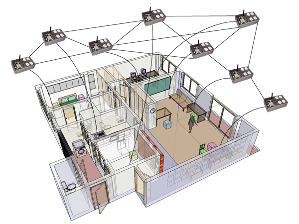
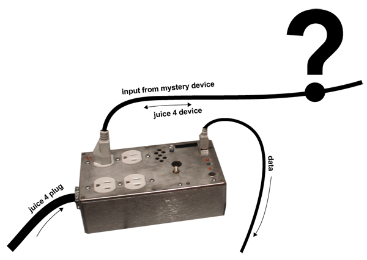

Project Motivation
The multiple functionalities of the Plug suggest a potential for a variety of applications. Smart human housing immediately comes to mind. By augmenting a human living environment with a network of Plugs, it is possible to build a system that can predict the identity and state of any given device connected to the network. After extracting patterns of energy consumption from the data collected by the Plug network, a Plug can control a device's behavior based on these predictions, anticipating the needs of the human user, for example optimizing the overall energy consumption of the plug-aware living environment.
The idea of a smart building is not new, but there have been very few efforts to embed sensor networks and intelligent systems into old infrastructures that were built with no support for digital technologies. Enhanced with myriads of Plug-like devices, the skin of the city could become a collective responsive interface, and beginning to take an active role in the forces that motivate its evolution. From a human perspective, it might be a better effort towards that end to try hacking existing infrastructures, instead of rebuilding them from scratch.

A simple scenario can be conceived using nothing more that voltage-current information from a single Plug. If the Plug could learn to identify the devices connected to it just by looking at it's current signature, and if it could tell a difference of state in the device's performance by looking at fluctuations of it's current signature, the Plug could predict patterns of human activity within it's host room. We can think every other device in the room is fed power through the Plug. If there is only a computer and a lamp in the room, and the Plug knows both of them are turned on, and the computer doesn't report any sign of activity, then the Plug could assume that room is empty, and it would be safe to dim (or turn off) the light, thus saving energy that would otherwise be wasted.

In terms of Pattern Recognition, there are two important questions to deal with:
1: Can the Plug know what kind of device is connected to it by looking at its power signature? (identity)
2: Can the Plug know if a device is being actively used? (state)
Each Plug should be able to recognize the identity and state of any given device connected to it. Our intention has been to answer the first question. We have been looking at the problem of designing a system to determine the identity of a device connected to a Plug, by merely analyzing the device's power signature.